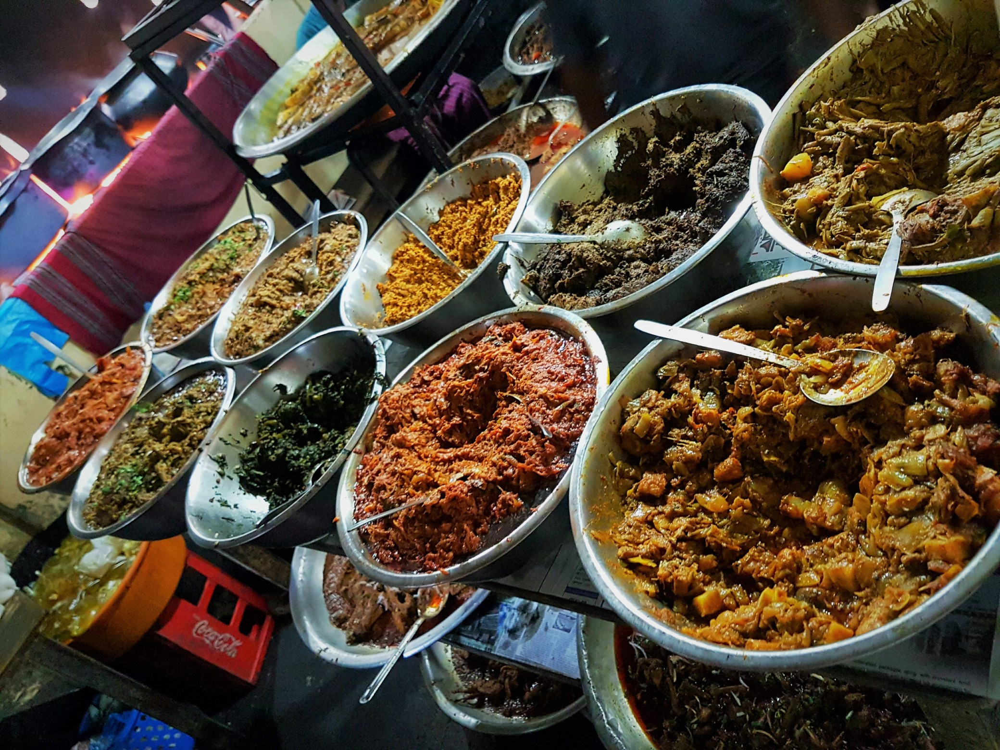
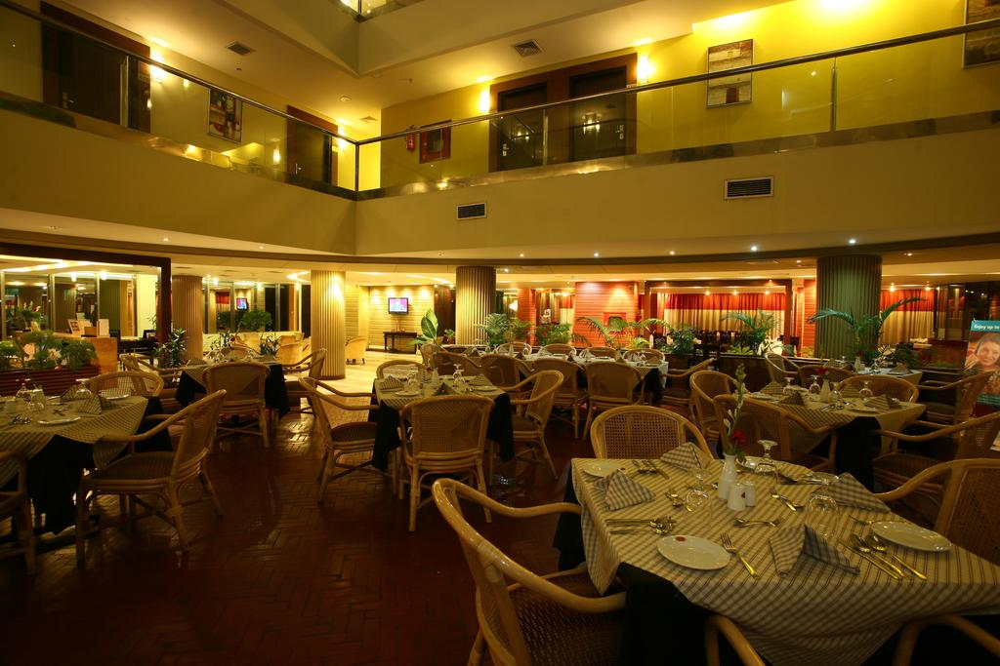
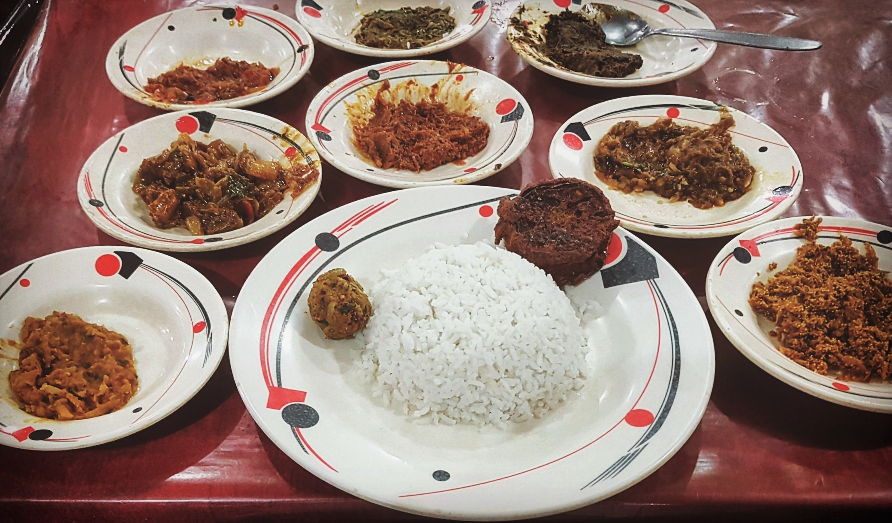

Paanch Bhai Restaurant
Description
The legendary Paach Bhai restaurant is famous for its assortment of ‘Bhorta’s i.e.
spicy mashed local delicacies. The restaurant went through renovations recently and
has better sitting arrangements than before. The food is inexpensive and the delicious
‘bhorta’s with a plate of steamed rice is to die for.Open Everyday from 5:30 – Midnight
(Closing time may vary depending on the availability of items)
Location and Contact Information
Address: Barbhuiya Siddeque Plaza, Hazrat Shahjalal Rd,, Sylhet City, Bangladesh
Location: Asia > Bangladesh > Sylhet Division > Sylhet City
Restaurant features
Reservations, Seating, Waitstaff
Cuisine
Seafood, Barbecue, Asian

Woondaal King Kebab
Location and Contact Information
Address: 465 East Zindabazar, Sylhet City 3100, Bangladesh
Location: Asia > Bangladesh > Sylhet Division > Sylhet City
Phone Number: +880 1717-020505
Restaurant features
Takeout, Reservations, Outdoor Seating, Seating, Waitstaff

Bhujon Bari
Location and Contact Information
Address: Jallarpar Road, Sylhet City 3100, Bangladesh
Location: Asia > Bangladesh > Sylhet Division > Sylhet City
Phone Number: +880 1749-313282
Restaurant features
Seating, Waitstaff, Takeout